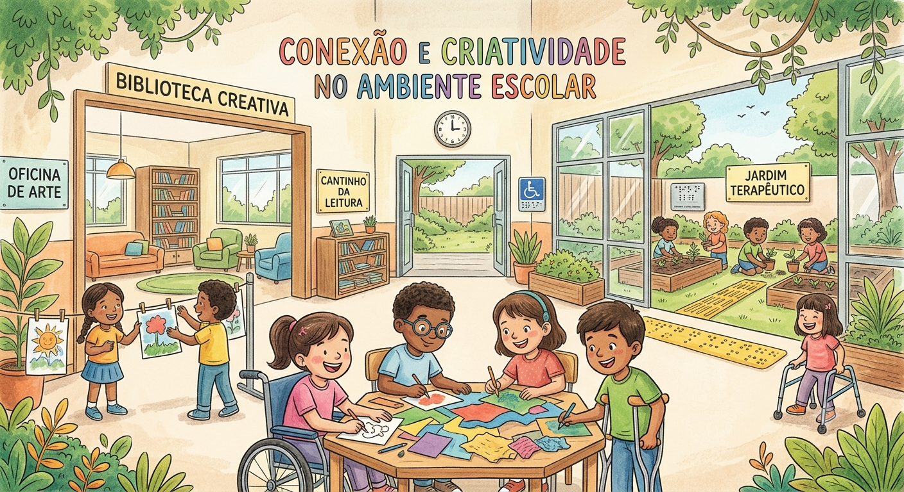
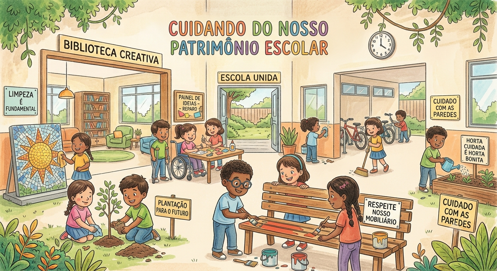

O Game do Saber é uma iniciativa criada para tornar o aprendizado mais dinâmico e interativo no ambiente escolar. O objetivo principal deste projeto é transformar a forma como absorvemos conhecimento, mostrando que aprender também pode ser divertido e além, também apresentarei temas que podem ser melhorados na escola, tornando o ambiente mais inclusivo e acolhedor. Neste site, citarei três tópicos de minha escolha para explorar em detalhes:

Nossa escola não é apenas um terreno com várias salas de aula. É o lugar onde permanecemos por cerca de 12 anos de nossas vidas, onde construímos memórias, amizades e preparamos nosso futuro. Por isso, é extremamente necessário que cuidemos do nosso ambiente escolar, para que nós e os futuros estudantes também possamos aproveitar um ambiente conservado, limpo e acolhedor.